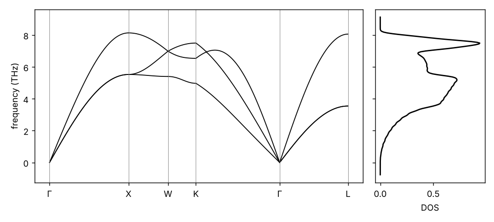

Curriculum/Computational labsLAB 301
Lab: Phonons with phonopy
Atoms in a crystal vibrate around their equilibrium positions, and these vibrations carry the heat, determine the heat capacity and the thermal expansion, scatter the electrons that cause electrical resistance, and tell whether a structure is stable. In the harmonic approximation they are the phonons. This lab computes the phonons of copper from forces, in four steps: displace atoms, compute the forces, build the force constants, and diagonalise the dynamical matrix. The forces here come from the built-in EMT potential of ASE so that the whole lab runs in seconds; the workflow is identical when they come from DFT, and Step 8 shows how to switch.
- Reading time
- about 23 min
- Leads to
- —
- Level
- Year 3: advanced theory
- Explain how force constants and the dynamical matrix lead to phonon frequencies.
- Run the finite-displacement workflow with phonopy and ASE.
- Read and plot a phonon band structure and density of states, and convert between THz, meV, cm-1 and kelvin.
- Obtain the heat capacity, entropy and Debye temperature from the phonons.
- Test convergence with the supercell size and the reference structure, and recognise an imaginary mode.
- Estimate the thermal expansion from the volume dependence of the frequencies.
Step 1. Install#
python3 -m venv ~/venvs/phon && source ~/venvs/phon/bin/activate
pip install phonopy ase numpy scipy matplotlib
python -c "import phonopy, ase; print(phonopy.__version__, ase.__version__)"4.8.4 3.29.0(These are the versions used for this page. If a function of the script is renamed in a future version, the error message names the new one; the phonopy documentation is at phonopy.github.io/phonopy.) phonopy is also a command-line program that reads files of VASP, Quantum ESPRESSO, CASTEP and other codes; here we use its Python interface, which is easier to follow.
Step 2. What is computed#
Expand the energy of the crystal to second order in the displacements $u_{i\alpha}$ of the atoms from equilibrium (Cartesian direction $\alpha$): $E=E_0+\tfrac12\sum\Phi_{i\alpha,j\beta}u_{i\alpha}u_{j\beta}$. The matrix of force constants $\Phi_{i\alpha,j\beta}=\partial^2E/\partial u_{i\alpha}\partial u_{j\beta}=-\partial F_{j\beta}/\partial u_{i\alpha}$ is a property of the structure and of the interatomic forces. Searching for plane-wave solutions $u\propto e^{i(\mathbf q\cdot\mathbf R-\omega t)}$ gives the eigenvalue problem (PHYS 302) $$D_{\alpha\beta}(\mathbf q)\,e_\beta=\omega^2e_\alpha,\qquad D_{\alpha\beta}(\mathbf q)=\sum_{j}\frac{\Phi_{0\alpha,j\beta}}{\sqrt{m_0m_j}}\,e^{i\mathbf q\cdot\mathbf R_j},$$ whose $3n$ eigenvalues for each $\mathbf q$ are the squared frequencies of the branches (for a primitive cell with $n$ atoms). Two facts you will see in the results: the three lowest branches go to zero at $\mathbf q=0$ (the acoustic modes: rigid translations cost no energy); and a negative eigenvalue $\omega^2<0$ means an imaginary frequency, i.e. the structure is not at a minimum of the energy but at a saddle point.
In the finite-displacement method, $\Phi$ is obtained by displacing one atom by a small distance (here $0.01$ Å) along a Cartesian axis and reading the forces on all atoms: $\Phi_{i\alpha,j\beta}\approx-[F_{j\beta}(u)-F_{j\beta}(0)]/u$. The calculation has to be done in a supercell, because a displacement in a periodic crystal is repeated in every cell; the supercell must be larger than the range of the force constants. The symmetry of the crystal reduces the number of displaced supercells to the minimum: for fcc copper the whole force-constant matrix follows from one displacement.
Step 3. The workflow in code#
"""Phonons of fcc copper with phonopy, using ASE's EMT potential for the forces (finite-displacement method)."""
import warnings; warnings.filterwarnings("ignore")
import numpy as np, matplotlib
matplotlib.use("Agg")
import matplotlib.pyplot as plt
from ase import Atoms
from ase.build import bulk
from ase.calculators.emt import EMT
from ase.optimize import BFGS
from ase.filters import FrechetCellFilter
from phonopy import Phonopy
from phonopy.structure.atoms import PhonopyAtoms
def make_phonopy(atoms, n, distance=0.01):
"""Displace atoms in an n x n x n supercell, compute the forces with EMT, and build the force constants."""
cell = PhonopyAtoms(symbols=atoms.get_chemical_symbols(), cell=atoms.cell.array, scaled_positions=atoms.get_scaled_positions())
ph = Phonopy(cell, supercell_matrix=np.diag([n, n, n]))
ph.generate_displacements(distance=distance)
forces = []
for sc in ph.supercells_with_displacements:
at = Atoms(sc.symbols, cell=sc.cell, scaled_positions=sc.scaled_positions, pbc=True); at.calc = EMT()
forces.append(at.get_forces())
ph.forces = forces
ph.produce_force_constants()
return ph
if __name__ == "__main__":
# 1. relax the primitive cell (positions and cell) with the same potential: phonons need zero force and zero stress
cu = bulk("Cu", "fcc", a=3.6); cu.calc = EMT()
BFGS(FrechetCellFilter(cu), logfile=None).run(fmax=1e-4)
print("relaxed lattice constant a = %.4f A" % (2 * cu.cell[0, 1]))
ph = make_phonopy(cu, 4)
print("number of displaced supercells: %d, atoms per supercell: %d" % (len(ph.supercells_with_displacements), len(ph.supercells_with_displacements[0].symbols)))
# 2. frequencies (THz) at high-symmetry points
pts = {"Gamma": [0, 0, 0], "X": [0.5, 0, 0.5], "L": [0.5, 0.5, 0.5], "K": [0.375, 0.375, 0.75]}
print("\nfrequencies (THz) of the three branches")
for name, q in pts.items():
ph.run_qpoints([q]); f = ph.qpoints.frequencies[0]
print(" %-6s %s" % (name, " ".join("%6.3f" % x for x in f)))
# 3. band structure and density of states
G, X, W, K, L = [0, 0, 0], [0.5, 0, 0.5], [0.5, 0.25, 0.75], [0.375, 0.375, 0.75], [0.5, 0.5, 0.5]
path = [[G, X, W, K, G, L]]
qpoints = [np.linspace(a, b, 60) for a, b in zip(path[0][:-1], path[0][1:])]
ph.run_band_structure(qpoints, labels=["Γ", "X", "W", "K", "Γ", "L"])
ph.run_mesh([24, 24, 24]); ph.run_total_dos(sigma=0.1)
fig, ax = plt.subplots(1, 2, figsize=(8, 3.6), gridspec_kw={"width_ratios": [3, 1]}, sharey=True)
bs = ph.band_structure
for d, f in zip(bs.distances, bs.frequencies): ax[0].plot(d, f, "k", lw=1)
ticks = [d[0] for d in bs.distances] + [bs.distances[-1][-1]]
ax[0].set_xticks(ticks); ax[0].set_xticklabels(["Γ", "X", "W", "K", "Γ", "L"]); ax[0].set_ylabel("frequency (THz)")
for t in ticks: ax[0].axvline(t, color="grey", lw=0.5)
ax[1].plot(ph.total_dos.dos, ph.total_dos.frequency_points, "k"); ax[1].set_xlabel("DOS")
fig.tight_layout(); fig.savefig("cu_phonons.png", dpi=130)
fmax = ph.total_dos.frequency_points[np.where(ph.total_dos.dos > 1e-3)[0][-1]]
print("\nhighest frequency in the DOS: about %.2f THz = %.1f meV = %.0f cm^-1" % (fmax, fmax * 4.13567, fmax * 33.3564))
# 4. thermodynamics from the harmonic phonons
ph.run_mesh([30, 30, 30]); ph.run_thermal_properties(t_min=10, t_max=1000, t_step=10)
tp = ph.thermal_properties
T, F, S, Cv = tp.temperatures, tp.free_energy, tp.entropy, tp.heat_capacity # kJ/mol, J/K/mol, J/K/mol
print("\n T (K) F_vib (kJ/mol) S (J/K/mol) C_v (J/K/mol) C_v/3R")
R = 8.314462618
for t in (50, 100, 200, 300, 500, 1000):
i = list(T).index(t); print(" %5d %9.3f %8.2f %8.2f %.3f" % (t, F[i], S[i], Cv[i], Cv[i] / (3 * R)))
np.save("cu_cv.npy", np.array([T, Cv]))
# 5. Debye temperature that reproduces C_v at each temperature
from scipy.integrate import quad
from scipy.optimize import brentq
def cv_debye(T, theta):
f = lambda x: x**4 * np.exp(x) / (np.exp(x) - 1) ** 2
return 9 * R * (T / theta) ** 3 * quad(f, 0, theta / T)[0]
print("\nT (K) theta_D that reproduces C_v (K)")
for t in (50, 100, 200, 300):
i = list(T).index(t); print(" %4d %5.0f" % (t, brentq(lambda th: cv_debye(t, th) - Cv[i], 100, 1000)))The function make_phonopy does the whole job: it passes the cell to phonopy with the supercell matrix $n\times n\times n$, asks for the symmetry-reduced displacements, computes the forces with EMT in each displaced supercell, and builds the force constants. Before it, the primitive cell is relaxed (cell vectors and atoms) with the same potential so that the forces are zero in the reference structure; the result is $a=3.5898$ Å, which agrees with the equation-of-state result of Step 5 of LAB 201 ($3.590$ Å). The output of the first part:
relaxed lattice constant a = 3.5898 A
number of displaced supercells: 1, atoms per supercell: 64
frequencies (THz) of the three branches
Gamma -0.000 -0.000 -0.000
X 5.530 5.530 8.141
L 3.549 3.549 8.067
K 4.974 6.544 7.504
highest frequency in the DOS: about 8.34 THz = 34.5 meV = 278 cm^-1One displaced supercell of $64$ atoms was enough, as announced. At $\Gamma$ the three frequencies are zero (acoustic modes; the printed “$-0.000$” is numerical noise of $10^{-6}$ THz). At the zone-boundary points the frequencies are those of Step 4. The unit that phonopy uses is THz (as ordinary frequency $\nu$, so $\omega=2\pi\nu$). Conversions: $1$ THz $=4.136$ meV $=33.36$ cm$^{-1}=47.99$ K ($h\nu/k_\mathrm B$). The highest frequency $8.1$ THz corresponds to $34$ meV, $272$ cm$^{-1}$ and $391$ K: the vibration with the shortest period ($0.12$ ps, Exercise 1).
Step 4. Band structure and density of states#
A phonon band structure plots $\omega(\mathbf q)$ along a path through the high-symmetry points of the Brillouin zone: $\Gamma$ (centre), X (zone face centre, $\tfrac12\,0\,\tfrac12$), W, K and L (the hexagonal face centre, $\tfrac12\tfrac12\tfrac12$). The density of states $g(\omega)$ counts the number of modes per frequency interval on a dense mesh of $24^3$ $\mathbf q$ points (the script smooths with a Gaussian of $0.1$ THz).

Reading the picture: there are three branches because the primitive fcc cell has one atom. Along $\Gamma$–X the upper branch is longitudinal (LA) and the two lower ones are transverse (TA), degenerate by symmetry. At small $q$ the branches are linear, $\omega=c\,q$, with $c$ the speed of sound (the slope of the LA branch is larger than the TA ones because the longitudinal elastic constants are larger, $C_{11}>C_{44}$; MATH 302). Near the zone boundary the branches flatten: neighbouring atoms are vibrating in antiphase and the group velocity vanishes (van Hove singularities, seen as steps and peaks in the DOS). The DOS grows as $\omega^2$ at low frequency (the Debye behaviour that gives $C_v\propto T^3$), has a shoulder near $4$–$5.5$ THz from the flat transverse branches, and a sharp peak near $7.5$ THz from the longitudinal branch; the highest frequency is $8.3$ THz. (Neutron scattering finds about $7$ THz as the highest frequency of copper: EMT is a simple model that is about 15% too stiff, which is the kind of deviation expected from a potential fitted to other properties.)
Step 5. Thermodynamic properties#
With the frequencies $\omega_{\mathbf q s}$ on a mesh, the harmonic free energy is $F=\sum_{\mathbf qs}\left[\tfrac12\hbar\omega+k_\mathrm BT\ln(1-e^{-\hbar\omega/k_\mathrm BT})\right]$, and the entropy and heat capacity follow by differentiation (PHYS 102; the result for one oscillator is the Einstein function). phonopy does the sums with run_thermal_properties. The last block of the script also finds the Debye temperature $\theta_D$ that makes the Debye model give the same $C_v$ at each $T$:
T (K) F_vib (kJ/mol) S (J/K/mol) C_v (J/K/mol) C_v/3R
50 3.170 2.02 5.37 0.215
100 2.904 8.96 14.89 0.597
200 1.323 21.92 21.61 0.866
300 -1.351 31.08 23.37 0.937
500 -8.885 43.31 24.36 0.977
1000 -35.283 60.38 24.79 0.994
T (K) theta_D that reproduces C_v (K)
50 332
100 340
200 344
300 345The heat capacity rises from $5.4$ J/mol/K at $50$ K to $23.4$ at $300$ K and $24.8$ at $1000$ K, approaching the Dulong–Petit value $3R=24.94$ J/mol/K (the classical limit, reached when $k_\mathrm BT$ exceeds the highest phonon energy: $T\gg\theta$). The harmonic model has no further increase above $3R$, so it cannot describe the experimental rise from anharmonicity and electrons at high temperature. The zero-point energy is positive ($F=3.17$ kJ/mol at $50$ K, where the entropy is nearly zero: $F\approx E_\mathrm{ZP}=\tfrac12\hbar\sum\omega$), and at high $T$ the free energy falls as $-TS$. The Debye temperatures $332$ to $345$ K that reproduce $C_v$ are close to the measured $\theta_D=343$ K of copper; the slight drift with $T$ shows that real phonon spectra are not exactly Debye-like. (The highest frequency corresponds to $h\nu/k_\mathrm B=400$ K, and the effective $\theta_D$ is smaller than this because it is an average over the whole spectrum, with weight on the lower frequencies.)
Step 6. Convergence and sanity checks#
A phonon spectrum can look convincing and be wrong. The second script performs three tests that you should do for every system: the size of the supercell, the lattice constant of the reference structure, and dynamical stability:
"""Three tests that every phonon calculation needs: supercell size, the reference structure, and dynamical stability."""
import warnings; warnings.filterwarnings("ignore")
import numpy as np
from ase.build import bulk
from ase.calculators.emt import EMT
from ase.optimize import BFGS
from ase.filters import FrechetCellFilter
from phonons_cu import make_phonopy
X = [0.5, 0, 0.5]
def freq_X(ph):
ph.run_qpoints([X]); return ph.qpoints.frequencies[0]
cu = bulk("Cu", "fcc", a=3.6); cu.calc = EMT(); BFGS(FrechetCellFilter(cu), logfile=None).run(fmax=1e-4)
print("1. supercell size (relaxed Cu, frequencies at X in THz)")
for n in (2, 3, 4, 5, 6):
ph = make_phonopy(cu, n); f = freq_X(ph)
print(" %d x %d x %d (%3d atoms) %s lowest acoustic at Gamma: %.3f" % (n, n, n, n**3, " ".join("%6.3f" % x for x in f), (lambda q: (ph.run_qpoints([[0, 0, 0]]), ph.qpoints.frequencies[0].min())[1])(0)))
print("\n2. reference lattice constant (4x4x4 supercell; the relaxed value is 3.5898 A)")
for a in (3.50, 3.5898, 3.70):
c = bulk("Cu", "fcc", a=a); ph = make_phonopy(c, 4)
print(" a = %.4f A X: %s THz" % (a, " ".join("%6.3f" % x for x in freq_X(ph))))
print("\n3. dynamical stability: bcc copper (a = 2.85 A, relaxed) with the same potential")
b = bulk("Cu", "bcc", a=2.85); b.calc = EMT(); BFGS(FrechetCellFilter(b), logfile=None).run(fmax=1e-4)
print(" E(bcc) - E(fcc) = %.1f meV/atom" % (1000 * (b.get_potential_energy() - cu.get_potential_energy())))
ph = make_phonopy(b, 4)
for name, q in {"H": [0.5, -0.5, 0.5], "N": [0, 0, 0.5], "P": [0.25, 0.25, 0.25]}.items():
ph.run_qpoints([q]); print(" %-2s %s THz" % (name, " ".join("%7.3f" % x for x in ph.qpoints.frequencies[0])))1. supercell size (relaxed Cu, frequencies at X in THz)
2 x 2 x 2 ( 8 atoms) 5.530 5.530 8.141 lowest acoustic at Gamma: 0.000
3 x 3 x 3 ( 27 atoms) 5.546 5.546 8.157 lowest acoustic at Gamma: -0.000
4 x 4 x 4 ( 64 atoms) 5.530 5.530 8.141 lowest acoustic at Gamma: -0.000
5 x 5 x 5 (125 atoms) 5.530 5.530 8.141 lowest acoustic at Gamma: 0.000
6 x 6 x 6 (216 atoms) 5.530 5.530 8.141 lowest acoustic at Gamma: 0.000
2. reference lattice constant (4x4x4 supercell; the relaxed value is 3.5898 A)
a = 3.5000 A X: 6.425 6.425 9.649 THz
a = 3.5898 A X: 5.530 5.530 8.142 THz
a = 3.7000 A X: 4.461 4.461 6.328 THz
3. dynamical stability: bcc copper (a = 2.85 A, relaxed) with the same potential
E(bcc) - E(fcc) = 32.7 meV/atom
H 7.672 7.672 7.672 THz
N -1.138 5.435 8.105 THz
P 5.815 5.815 5.815 THz1. Supercell size. The frequencies at X for $2\times2\times2$, $4\times4\times4$, $5\times5\times5$ and $6\times6\times6$ supercells agree to $0.001$ THz ($5.530$, $8.141$); the $3\times3\times3$ supercell is off by $0.016$ THz ($0.3\%$). The reason is commensurability: the X point $(\tfrac12,0,\tfrac12)$ lies on the grid of $\mathbf q$ points that an $n\times n\times n$ supercell describes exactly only for even $n$; for odd $n$ phonopy has to interpolate. Because the EMT force constants are short-ranged, the interpolation error is tiny; with DFT and long-range forces (metals with Kohn anomalies, polar crystals) it can be much larger. The practical rules are to check at least two supercell sizes and to make sure that the displacement does not generate forces that vanish only at the edge of the supercell.
2. The reference structure. Frequencies depend strongly on the lattice constant: the transverse X mode is $6.43$ THz at $a=3.50$ Å, $5.53$ THz at the relaxed $3.5898$ Å and $4.46$ THz at $3.70$ Å. A phonon calculation on a structure that is not relaxed with the same method (for example, the experimental lattice constant with a DFT code that gives a different one) therefore carries an error of tens of percent; if you need the experimental volume, compute at several volumes and use the quasi-harmonic approximation (Step 7).
3. Dynamical stability. The bcc structure of copper, relaxed with EMT, has an energy $32.7$ meV/atom above fcc, and its phonon at the N point has $-1.138$ THz. phonopy reports an imaginary frequency as a negative number (the sign of $\omega^2$). A negative value means that a displacement along that mode lowers the energy: the structure is not a minimum. Here the instability is the shear of the Bain path that transforms bcc into fcc. Small negative values ($>-0.1$ THz) near $\Gamma$ in a real calculation are numerical noise from the finite grid of the DFT code and are usually ignored; larger values at other points are physical or a sign of an unconverged calculation.
Step 7. Volume dependence: the Grüneisen parameter and thermal expansion#
In the harmonic approximation the crystal does not expand when heated (the phonon frequencies do not depend on the volume). The quasi-harmonic approximation lets the frequencies depend on the volume: each mode has a Grüneisen parameter $\gamma_{\mathbf qs}=-\partial\ln\omega_{\mathbf qs}/\partial\ln V$, positive in most solids because bonds stiffen on compression, and the thermal pressure of the phonons expands the lattice. The Grüneisen relation gives the linear expansion coefficient $\alpha=\gamma C_v/(3BV_m)$ with the average $\gamma$. We compute $\gamma$ for two modes at X from three lattice constants:
"""Mode Gruneisen parameters from the change of phonon frequencies with volume, and the thermal expansion they predict."""
import warnings; warnings.filterwarnings("ignore")
import numpy as np
from ase.build import bulk
from phonons_cu import make_phonopy
X = [0.5, 0, 0.5]
a = np.array([3.54, 3.5898, 3.64])
V = a**3 / 4
f = []
for ai in a:
ph = make_phonopy(bulk("Cu", "fcc", a=ai), 4); ph.run_qpoints([X]); f.append(ph.qpoints.frequencies[0][[0, 2]]) # TA and LA at X
f = np.array(f)
print(" a (A) V (A^3) TA(X) (THz) LA(X) (THz)")
for ai, Vi, fi in zip(a, V, f): print(" %.4f %7.3f %7.4f %7.4f" % (ai, Vi, fi[0], fi[1]))
g = -np.gradient(np.log(f), np.log(V), axis=0)[1] # centred difference at the relaxed volume
print("Gruneisen parameter gamma = -dln(omega)/dln(V): TA(X) %.2f LA(X) %.2f" % tuple(g))
gamma = 2.0 # a typical average value (the true average needs all modes)
B, Vm, Cv = 133.2e9, 6.02214e23 * (3.5898e-10) ** 3 / 4, 23.37 # EMT bulk modulus (LAB 201), molar volume, C_v at 300 K (phonons_cu.py)
alpha = gamma * Cv / (3 * B * Vm)
print("molar volume %.3f cm^3/mol; alpha_L = gamma C_v / (3 B V) = %.1f e-6 /K (gamma = %.1f)" % (Vm * 1e6, alpha * 1e6, gamma)) a (A) V (A^3) TA(X) (THz) LA(X) (THz)
3.5400 11.090 6.0254 8.9752
3.5898 11.565 5.5302 8.1416
3.6400 12.057 5.0391 7.3123
Gruneisen parameter gamma = -dln(omega)/dln(V): TA(X) 2.14 LA(X) 2.45
molar volume 6.965 cm^3/mol; alpha_L = gamma C_v / (3 B V) = 16.8 e-6 /K (gamma = 2.0)$\gamma_\mathrm{TA}(X)=2.14$ and $\gamma_\mathrm{LA}(X)=2.45$; the average over all modes needs the whole zone, but a value near $2$ is typical of metals ($\approx2$ for copper experimentally). With $\gamma=2.0$, $B=133.2$ GPa, $V_m=6.965$ cm$^3$/mol and $C_v=23.37$ J/mol/K the expansion coefficient at $300$ K is $\alpha=16.8\times10^{-6}$ K$^{-1}$, in good agreement with the $16.7\times10^{-6}$ from the NPT simulation of the EAM model in LAB 503 and with the measured $16.5\times10^{-6}$. Two quite different routes (molecular dynamics, with full anharmonicity at 300 K, and quasi-harmonic lattice dynamics) give the same number, which is evidence that the anharmonicity of copper at room temperature is moderate.
Step 8. Using forces from DFT (template; not run here)#
For a real calculation only the force calculator changes. The following is the standard command-line workflow of phonopy with VASP or Quantum ESPRESSO. These commands were not executed for this lab (a DFT code is not available in the environment where the page was produced), so they are given as a template; check the option names against the phonopy documentation of your version.
phonopy -d --dim 4 4 4 -c POSCAR # write the displaced supercells POSCAR-001, ... and phonopy_disp.yaml
# run your DFT code (relaxed structure, tight convergence) in each displaced supercell and collect the forces
phonopy -f disp-001/vasprun.xml disp-002/vasprun.xml ... # builds FORCE_SETS
phonopy --dim 4 4 4 -c POSCAR -p -s band.conf # band structure plot, with DIM, BAND = ... set in band.conf
phonopy --dim 4 4 4 -c POSCAR --mesh 20 20 20 -t # thermal propertiesWith Quantum ESPRESSO use --qe -c pw.in and read the forces from pw.out files. The cost is that of $N_\mathrm{disp}$ DFT calculations in a supercell of $50$–$200$ atoms, which for a simple crystal such as copper means a few displaced cells and hours on a few cores, instead of seconds. Compare your DFT phonons with the EMT results of this lab (they should be similar in shape, with a highest frequency near $7$ THz), and use the same checks: converge the $\mathbf k$-point mesh and the plane-wave cutoff, relax the structure with the same functional, test the supercell size.
Step 9. Typical problems#
| Symptom | Cause | Fix |
|---|---|---|
| Imaginary frequencies at $\Gamma$ (acoustic modes $\ne0$) | structure not relaxed (residual forces), or the force calculation is not converged | Relax to forces $<10^{-4}$ eV/Å; tighten SCF and cutoff |
| Acoustic frequencies at $\Gamma$ of order 0.1–1 THz | violation of the acoustic sum rule by numerical noise (common with DFT on a real-space grid) | Apply the acoustic sum rule; use a finer grid; compare with 2 supercells |
| Imaginary frequencies elsewhere | real instability, or supercell too small to hold the unstable mode | Test larger supercells; follow the mode and relax (a phase transition!) |
| Frequencies at X depend on the supercell parity | the $\mathbf q$ point is not commensurate with the supercell | Use a supercell whose size makes the $\mathbf q$ point exact (even $n$ for X) |
| Frequencies much too high or low | wrong lattice constant (Step 6), wrong masses, wrong units (THz $\ne$ rad/ps) | Check the reference structure; $\omega=2\pi\nu$ |
| Heat capacity above $3R$ | negative or tiny frequencies near $\Gamma$ on a coarse mesh | Refine the mesh; check the DOS near $\omega=0$ |
- Phonons are the quantised lattice vibrations: for each wave vector q a crystal with n atoms per cell has 3n branches whose frequencies are the square roots of the eigenvalues of the dynamical matrix D(q), built from the force constants (the derivatives of forces with respect to displacements).
- In the finite-displacement method, a few atoms of a supercell are displaced by 0.01 angstrom, the forces on all atoms are computed (with any calculator), and phonopy turns them into force constants; because of symmetry, fcc copper needs only one displaced supercell of 64 atoms.
- For copper with the EMT potential the frequencies at X are 5.53 (two transverse branches) and 8.14 THz (longitudinal), the highest frequency of the DOS is 8.3 THz, and the heat capacity from the phonons is 23.4 J/mol/K at 300 K (0.937 of the Dulong-Petit value 3R) with an effective Debye temperature of 345 K.
- Every phonon calculation needs three checks: the supercell must be large enough (the frequency at X changes by less than 0.02 THz from 2x2x2 to 6x6x6 here, but the commensurability with q matters), the structure must be relaxed with the same potential (frequencies at X change from 6.4 to 4.5 THz when a goes from 3.50 to 3.70 angstrom), and the result must have no imaginary frequencies (bcc copper in EMT has -1.14 THz at N, so it is dynamically unstable).
- Frequency changes with volume give the Gruneisen parameter (about 2.1 for the TA mode at X) and, together with the heat capacity and bulk modulus, the thermal expansion: alpha = gamma Cv/(3BV) = 16.8e-6 per K, close to the measured 16.5e-6.
Exercises#
The longitudinal frequency at X is $8.141$ THz. Convert it into (a) meV, (b) cm$^{-1}$, (c) kelvin ($h\nu/k_\mathrm B$) and (d) the period of the vibration in ps.
Hint
$h=4.1357$ meV/THz; $1$ THz $=33.356$ cm$^{-1}$; $k_\mathrm B=0.08617$ meV/K.
Full solution
(a) $8.141\times4.1357=33.67$ meV. (b) $8.141\times33.356=271.6$ cm$^{-1}$. (c) $33.67/0.08617=390.7$ K. (d) $T=1/\nu=1/8.141\ \mathrm{THz}=0.1228$ ps $=123$ fs. At room temperature ($k_\mathrm BT=25.9$ meV) the highest modes are only partly excited (the energy $33.7$ meV is above $k_\mathrm BT$), which is why $C_v$ is below $3R$ at $300$ K.
(a) $33.67$ meV (b) $271.6$ cm$^{-1}$ (c) $391$ K (d) $0.123$ ps
From the table of Step 5, (a) how large is $C_v$ at $300$ K compared with the measured heat capacity at constant pressure $C_p=24.4$ J/mol/K? (b) Estimate $C_p-C_v=9\alpha^2BVT$ with $\alpha=16.5\times10^{-6}$ K$^{-1}$, $B=133.2$ GPa, $V=6.965$ cm$^3$/mol, and compare. (c) Why does the harmonic $C_v$ never exceed $3R=24.94$?
Hint
Use SI units: $B=133.2\times10^9$ Pa, $V=6.965\times10^{-6}$ m$^3$/mol.
Full solution
(a) $C_v=23.37$ J/mol/K is $4.2\%$ below $C_p=24.4$. (b) $9\times(16.5\times10^{-6})^2\times133.2\times10^9\times6.965\times10^{-6}\times300=0.68$ J/mol/K, so the phonon estimate of the constant-pressure value is $23.37+0.68=24.05$ J/mol/K, within $1.4\%$ of the measurement (the remaining difference includes the electronic heat capacity, $\approx0.2$ J/mol/K at $300$ K for copper, and EMT stiffness). (c) The harmonic crystal is a set of independent oscillators; each contributes at most $k_\mathrm B$ to the heat capacity (the classical equipartition value), and there are $3N$ of them, so $C_v\le3Nk_\mathrm B=3R$. Higher values need anharmonicity, vacancies or electrons.
(a) $-4.2\%$ (b) $C_p-C_v=0.68$, $C_p\approx24.05$ (c) at most $k_\mathrm B$ per oscillator
The highest frequency in the DOS is $8.34$ THz and the Debye temperatures from $C_v$ are $332$–$345$ K. (a) Convert the highest frequency into a temperature $\theta_\mathrm{max}=h\nu_\mathrm{max}/k_\mathrm B$. (b) Why is $\theta_D$ smaller? (c) At what temperature does $C_v$ reach $90\%$ of $3R$, according to the table?
Hint
$h\nu/k_\mathrm B=47.99\ \mathrm K/\mathrm{THz}\times\nu$. For (c) interpolate $C_v/3R$ between $200$ K and $300$ K.
Full solution
(a) $\theta_\mathrm{max}=8.34\times47.99=400$ K. (b) The Debye model replaces the real spectrum by $g(\omega)\propto\omega^2$ up to a cutoff chosen to conserve the number of modes. The real DOS has more weight at low and intermediate frequencies than the Debye form (the flat transverse branches), so the effective cutoff that reproduces $C_v$ is lower than the highest phonon. (c) The ratio $0.866$ at $200$ K and $0.937$ at $300$ K; linear interpolation gives $0.90$ at $T=200+100\times(0.90-0.866)/(0.937-0.866)=248$ K, about $0.7\,\theta_D$.
(a) $400$ K (b) the DOS has more weight at low $\omega$ (c) $\approx250$ K
Explain the supercell test of Step 6: (a) why do the $2\times2\times2$ and $6\times6\times6$ supercells give the same frequency at X while the $3\times3\times3$ does not? (b) What would you check before trusting a DFT phonon calculation in a $2\times2\times2$ supercell of a metal? (c) How many atoms does a $4\times4\times4$ supercell have for a cubic cell with 4 atoms?
Hint
Which $\mathbf q$ points have phases $e^{i\mathbf q\cdot\mathbf R}$ that are periodic in the supercell?
Full solution
(a) A supercell with $n$ primitive cells along each axis contains exactly the $\mathbf q$ points $\mathbf q=(m_1,m_2,m_3)/n$ in units of the reciprocal lattice. X is $(\tfrac12,0,\tfrac12)$ which is of this form only when $n$ is even; for $n=3$ the dynamical matrix at X is obtained by Fourier interpolation of force constants truncated at the supercell boundary, and the (small) error shows that the force constants beyond the cell boundary are not exactly zero. (b) Compare with $3\times3\times3$ or $4\times4\times4$, check that the force constants decay (print $|\Phi|$ against distance), and that the frequencies near $\Gamma$ give the right sound velocities from the elastic constants. In metals with Kohn anomalies a $2\times2\times2$ cell is generally not enough. (c) $4^3\times4=256$ atoms for the cubic cell, but with the 1-atom primitive cell used in the script it is $64$.
(a) X is commensurate only with even $n$ (b) check convergence (c) 64 (primitive) or 256
Compute the Grüneisen parameter of the TA mode at X by hand from the table of Step 7 ($a=3.5400$, $3.5898$, $3.6400$ Å; $\nu_\mathrm{TA}=6.0254$, $5.5302$, $5.0391$ THz), using the end points. Then (a) find $\alpha$ for $\gamma=2.14$ and $2.45$; (b) say whether the sign of the thermal expansion can be predicted from the sign of $\gamma$; (c) what would a negative $\gamma$ (as for some modes in silicon and zeolites) imply?
Hint
$V=a^3/4$; $\gamma=-\Delta\ln\nu/\Delta\ln V$; $\alpha=\gamma C_v/(3BV_m)$.
Full solution
$V=11.090$ and $12.057$ Å$^3$, $\ln(12.057/11.090)=0.0836$; $\ln(5.0391/6.0254)=-0.1788$, so $\gamma_\mathrm{TA}=0.1788/0.0836=2.14$. (a) With the same $C_v$, $B$, $V_m$ as in Step 7, $\alpha\propto\gamma$: $\alpha=16.8\times10^{-6}\times2.14/2.0=18.0\times10^{-6}$ for $\gamma=2.14$ and $20.6\times10^{-6}$ for $2.45$ K$^{-1}$: slightly above the measured $16.5\times10^{-6}$, because the average over all modes of the zone need not equal the value of these two zone-boundary modes. (b) Yes: $\alpha$ has the sign of the average $\gamma$ weighted by the mode heat capacities: positive $\gamma$ gives expansion. (c) A mode with negative $\gamma$ softens when the volume decreases, which contracts the lattice when it is thermally excited (negative thermal expansion at low temperature, as seen in silicon below $\approx120$ K and in some framework materials such as ZrW$_2$O$_8$).
$\gamma=2.14$; (a) $18.0$ and $20.6\times10^{-6}$ K$^{-1}$ (b) yes (c) contraction
Going further and references#
- Togo, A. and Tanaka, I., “First principles phonon calculations in materials science”, Scripta Materialia 108, 1 (2015); Togo, A., Chaput, L., Tadano, T. and Tanaka, I., “Implementation strategies in phonopy and phono3py”, Journal of Physics: Condensed Matter 35, 353001 (2023): the references to cite for phonopy; the documentation has the command-line workflows for every DFT code.
- Kittel, C., Introduction to Solid State Physics, chapters on phonons and thermal properties; Ashcroft, N. W. and Mermin, N. D., Solid State Physics; Dove, M. T., Introduction to Lattice Dynamics, Cambridge University Press: the theory behind Step 2.
- Baroni, S., de Gironcoli, S., Dal Corso, A. and Giannozzi, P., “Phonons and related crystal properties from density-functional perturbation theory”, Reviews of Modern Physics 73, 515 (2001): the alternative to finite displacements.
- Svensson, E. C., Brockhouse, B. N. and Rowe, J. M., “Crystal dynamics of copper”, Physical Review 155, 619 (1967): the neutron-scattering measurement of the phonon dispersion curves of copper.
- Next: finite-temperature behaviour beyond the harmonic approximation with molecular dynamics, LAB 503, and the electronic structure that underlies the force constants, CMS 501.